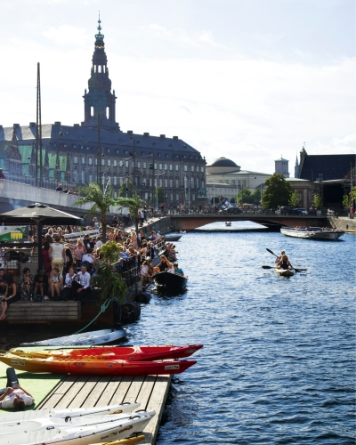
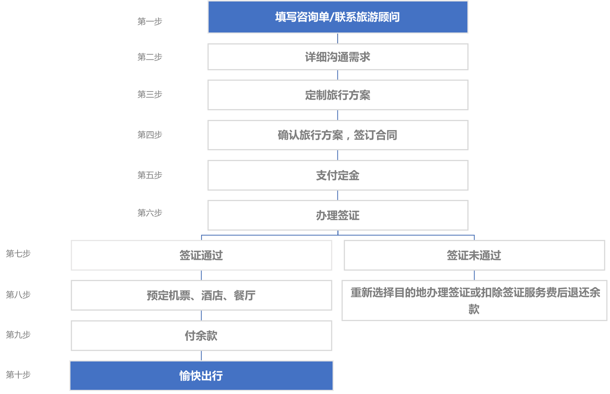
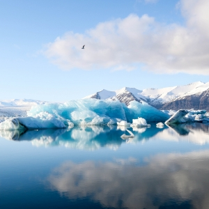
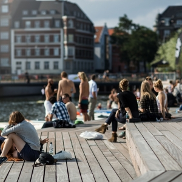

探索北欧
私人定制
主题游
旅游商城
北欧资讯
关于我们
松恩北欧旅游 | 您的旅行定制专家
我们在北欧恭候您的到来
立即咨询

什么是私人订制
私人定制在国外体现的是一种顶级的私人服务，意味着某种“特权”，但这种“特权”可以让客人真正体会到旅游的深层意义————著华不是旅游本身，而是一种更加完美的生活方式，让自己和家人拥有一段美好时光和长久 的记忆。
松恩北欧
松恩北欧旅行经过2年的成长和积累，已为100多位中国的贵宾提供过私人订制旅行方案，从而也让我们在同行业中积攒了良好的口碑。松恩北欧旅行一直秉承着‘客户需求至上’的企业口号，配备上专业的旅行规划师和最有经验的当地向导，我们相信我们可以给您个只属于您的假期体验。
松恩北欧x私人订制
松恩北欧旅行根据您的特定需求，从路线、方式和服务着手为您量身打造的具有浓郁个人专属风格的旅行，我们为您提供的是一种个性化、专属化、 “一 对一”式的高品质服务。您只需要全身心字受假期，我们的专业团队为您保驾护航。

程先生一家 | 丹麦亲子游
没有什么能比得上和孩子一起愉快出游，更能让孩子和父母拉近距离的了

'狼人杀'小伙伴们 | 冰岛极光之旅
一场说走就走的旅程，一段终身难忘的回忆。

梁先生 | 挪威、瑞典、丹麦文化之旅
放下手头工作，拿起收拾好的行囊，在路上从不后悔。
Miko
旅行顾问
从业四年，用脚步丈量过北欧五国特色景点。真正的北欧旅游是在北欧大自然的悠悠岁月里，体验独具当地特色文化的深度游。为了您高品质的旅行需求，我将把控细节，旅途中您一直有个朋友在关怀。2017年成功接待了东方卫视明星旅游综艺节目《极速前进》、《旅途的花样》节目组以及深圳明喆集团、徽酒集团等许多商务考察团队，让我掬捧我的真心和4年专业经验，搭建您与北欧的桥梁。
Hao
旅行顾问
全球旅游管理研究生，留学瑞上和丹麦。热爱摄影，热爱美食。生活中已经走遍了整个欧洲大陆，却更喜欢北欧的风景和随遇而安的生活理念。体验过挪威卑尔根4000米高空的跳伞，感叹过冰岛唯美的极光，沉迷于丹麦童话王国的魅力，而这只是个开始。旅行及修行，而旅行的意义只有当自己亲身经历过才能深深切切的体会到，而把您的旅途的幻想变成真真切切的旅行体验，这就是我的职责。
探索北欧
丹麦
挪威
芬兰
冰岛
瑞典
主题小团
丹挪10日深度游
丹冰挪13日专享游
冰岛环岛10日游
北欧四国经典之旅
丹芬爱10日文化游
北欧故事
韩小姐冰岛蜜月
张先生生蚝旅
李总四国游
张先生生蚝旅
张先生生蚝旅
旅游商城
乐高乐园
赫尔辛基卡
挪威缩影
蓝湖温泉
瑞典热气球
关于我们
公司简介
联系方式
合作伙伴
加入我们
企业合作